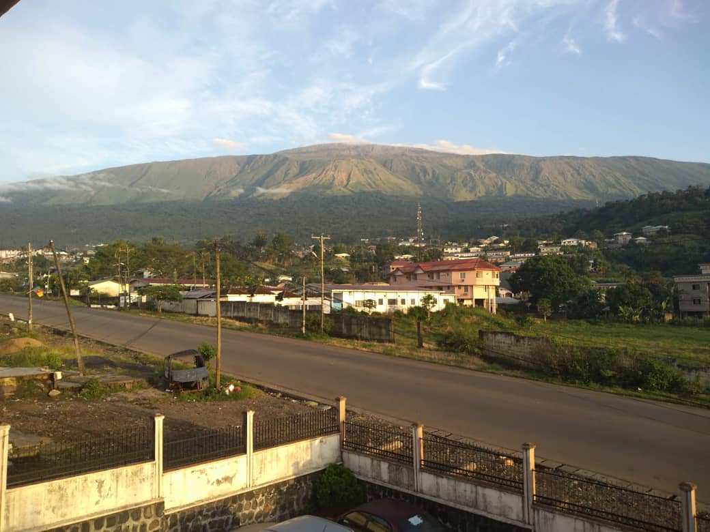

One of the most interesting towns in Cameroon
Buea is located on the eastern slopes of Mount Cameroon. It blends natural beauty with historical richness...
With a cool climate, colonial buildings, and vibrant communities, it's home to the University of Buea and growing tech startups.
Whether you're hiking up the mountain or walking through historic streets, Buea has something for everyone.
It has one of the most popular universities in Cameroon. This beautifull city is full of life and many students find it exciting to study there.
Buea is a historic town nestled at the foot of Mount Cameroon the highest mountain in west Africaknown for its cool climate.Buea is both a cultural and administrative hub.

Restaurants
Mile 18 Grill
Local grilled chicken and plantains
University Junction Café
Snacks and African dishes
Bakweri Kitchen
Traditional Bakweri meals
Chariot Fast Food
Shawarma, fries, drinks